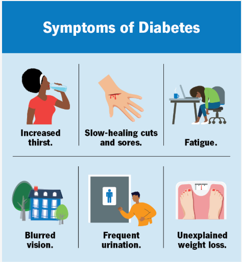

Your health, our priority. Get insights and early detection for diabetes.
Emergency Cases
24/7 emergency support for all critical situations.
Easy Appointment
Book your appointments in just a few clicks.
Qualified Doctors
Expert and professional doctors at your service.
×
Book an Appointment
Stay healthy, stay strong | Eat balanced meals and exercise daily | Your health is your wealth |
Stay healthy, stay strong | Eat balanced meals and exercise daily | Your health is your wealth |
Diabetes Awareness
What is Diabetes?
Diabetes is a disease that occurs when your blood glucose, also called blood sugar, is too high. Glucose is your body’s main source of energy. Your body can make glucose, but glucose also comes from the food you eat.
Insulin is a hormone made by the pancreas that helps glucose get into your cells to be used for energy. If you have diabetes, your body doesn’t make enough—or any—insulin, or doesn’t use insulin properly. Glucose then stays in your blood and doesn’t reach your cells.
Diabetes raises the risk for damage to the eyes, kidneys, nerves, and heart. Diabetes is also linked to some types of cancer. Taking steps to prevent or manage diabetes may lower your risk of developing diabetes health problems.
What are the symptoms of diabetes?
Frequent urination – The body tries to get rid of extra sugar through urine.
Excessive thirst – Because of frequent urination, the body loses water and feels very thirsty.
Extreme hunger – The body’s cells don’t get enough glucose, so you feel hungry often.
Unexplained weight loss – Even if you eat more, the body can’t use sugar properly, leading to weight loss.
Fatigue – Lack of energy in cells makes you feel very tired.
Blurred vision – High blood sugar can affect the eyes.
Slow healing – Cuts and wounds take longer to heal due to poor circulation and immunity.

Prevention Tips
Diabetes is one of the most common health issues in today’s world, but the good news is that it can often be prevented or delayed through simple lifestyle changes. Prevention is always better than treatment because once diabetes develops, it usually requires lifelong management. Some key steps to prevent diabetes include:
Healthy Eating: Choose fresh vegetables, fruits, whole grains, and foods low in sugar and unhealthy fats. Avoid junk food and sugary drinks.
Regular Exercise: Staying active for at least 30 minutes a day helps the body use insulin better and maintain a healthy weight.
Maintain Healthy Weight: Being overweight is one of the biggest risk factors for diabetes. Small, steady weight loss can make a big difference.
Avoid Smoking and Alcohol: These habits increase the risk of type 2 diabetes and other serious health problems.
Regular Check-ups: Monitoring blood sugar levels, cholesterol, and blood pressure can help detect early signs of diabetes.
By following these steps, people can reduce their chances of developing diabetes and live a healthier, longer life.
Why Early Detection?
Early detection of diabetes is very important because diabetes often develops silently, without obvious symptoms. By the time it is diagnosed, complications may have already started. Detecting diabetes early gives a person a better chance to control it and prevent serious damage.
Preventing Complications: Uncontrolled diabetes can lead to heart disease, kidney failure, nerve damage, vision loss, and more. Early treatment reduces these risks.
Better Management: When detected early, diabetes can often be managed with lifestyle changes, without the need for heavy medication.
Cost-Effective: Treating diabetes early is much less expensive than treating advanced complications.
Improved Quality of Life: Early diagnosis helps people live normal, active, and healthy lives with fewer restrictions.
Awareness of Risk Factors: Detecting prediabetes (a condition before diabetes fully develops) gives people time to act and reverse the condition.
In short, early detection empowers individuals to take control of their health before the disease takes control of them.
Stay Healthy | Early Detection Saves Lives | Diabetes Prevention is Better than Cure |
Stay Healthy | Early Detection Saves Lives | Diabetes Prevention is Better than Cure |